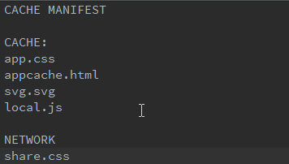
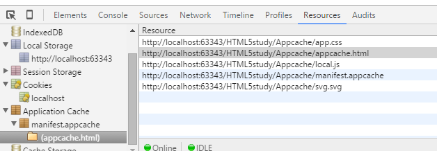
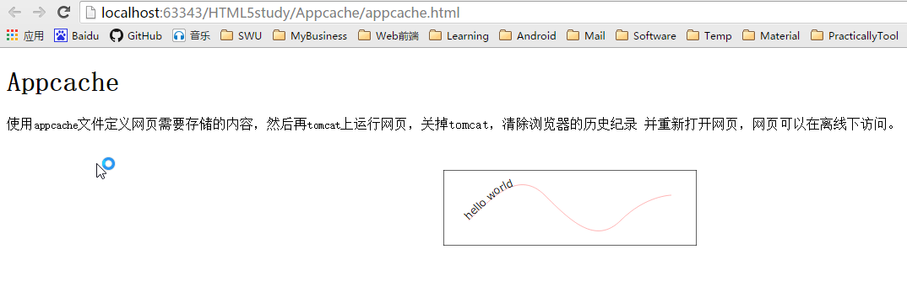

使用appcache文件定义网页需要存储的内容，然后再tomcat上运行网页，关掉tomcat，清除浏览器的历史纪录
并重新打开网页，网页可以在离线下访问。这个实例的appcache文件如下：

所有的文件除了share.css都缓存了，在关闭tomcat后再打开这个网页页面可以显示文字部分，但share.css控制的样式无法显示。
我们可以在chrome的web控制台->Resource->Application Cache中看到我们缓存的文件。

tomcat没有启动下的网页：
